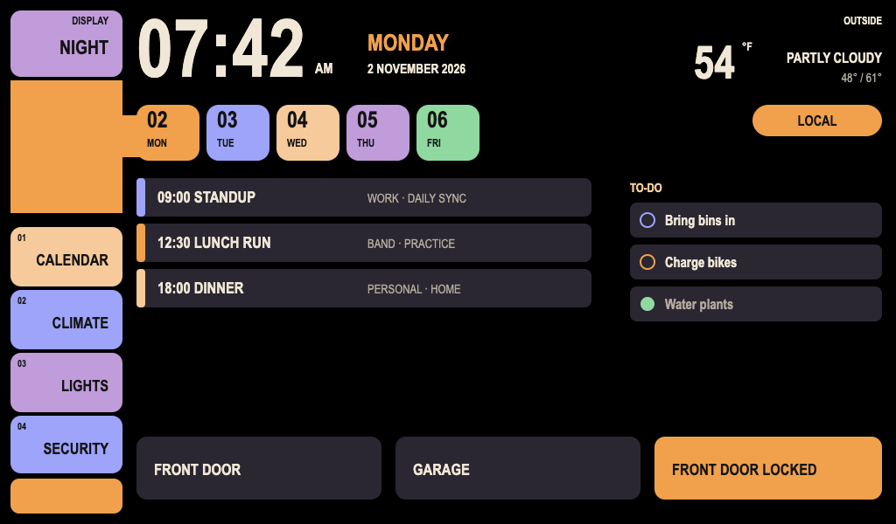

Step 01
Draw first
Boot from a baked layout in under half a second. Status shows CONNECTING until the KV snapshot lands.
Home Panel
Native Rust + Slint on a Raspberry Pi 5. House state over NATS. One balena release for every screen.

Features
One binary covers desktop and the wall screen. Live house data arrives over NATS; taps send absolute commands and reconcile from JetStream KV.
Clock, calendar strip, and event lanes. With NATS_URL set, the panel requests lcars.calendar.get and refreshes on lcars.calendar.updated.
The to-do column loads lcars.reminders.list; a tap marks an item done. The home readout shows the live forecast from the weather subject.
Lock, home, and away controls. Camera cards come from lcars.cameras.list; stills and live Annex-B video load from LCARS_HTTP_URL.
A companion voice-daemon service listens on the Pi, streams wake audio over the home NATS hub, and keeps the panel mic status honest.
balenaOS image with LinuxKMS FemtoVG on a 1024×600 panel. Push once; every screen moves together. Layout can still change live from KV.
Optimistic taps, pressed brightening, short cues from memory-mapped WAVs, idle dimming, and a status pill for link health.
Architecture
The panel never owns device integrations. It watches state, sends commands, and stays up when the network blips.
Step 01
Boot from a baked layout in under half a second. Status shows CONNECTING until the KV snapshot lands.
Step 02
JetStream KV delivers entity state. Updates coalesce per frame so a burst never floods the UI thread.
Step 03
Taps become absolute request/reply messages. The KV write is source of truth; the reply only closes the round trip.
home.v1 Protobuf types with the Go backendQuick start
The same lcars-app binary opens a 1024×600 window on macOS/Linux with the winit backend.
git clone https://github.com/asilluron/lcars-iot.git
cd lcars-iot
cargo run -p lcars-appPoint it at your broker when you have one. TLS needs a CA; device tokens cover both NATS and HTTP media.
| Variable | Purpose |
|---|---|
NATS_URL |
Broker address. Use tls://… with NATS_CA_B64 or NATS_CA_FILE. |
LCARS_HTTP_URL |
Origin of lcars-api for camera stills and live video. |
LCARS_DEVICE_USER / SECRET |
Device token used as NATS credentials and HTTP basic auth. |
AUDIO_ENABLED |
Set 0 to mute button cues. |
SLINT_BACKEND |
On the Pi fleet: linuxkms-femtovg. |
# Fleet image from the repo root
balena push <fleet>
# Local checks
cargo fmt --all --check
cargo clippy --workspace --all-targets --locked -- -D warnings
cargo test --workspace --all-targets --locked
buf lintDocumentation
The technical specification is the source of truth for goals, protocol, budgets, and failure modes.